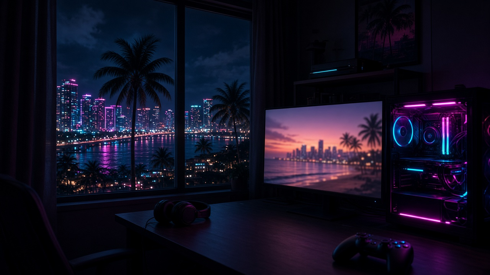

GTA 6 news
Is GTA 6 Coming to PC? What We Know | Peekhole

Short answer: not officially, not yet. GTA 6 launched on November 19 only on PS5 and Xbox Series X|S. Rockstar hasn't announced a PC version, price, or release date.
What about the early 2027 rumor?
GamesBeat reported that Rockstar plans to release the PC version in the first three months of 2027. That comes from four industry sources who asked not to be named. Rockstar didn't comment, and neither Rockstar nor Take-Two has confirmed it. So treat it as a credible rumor, not a date.
Can you pre-order it on Steam?
No. IBTimes notes there's no listing or pre-order on Steam, the Epic Games Store, or the Rockstar Games Launcher. There are no official PC system requirements either. Anything selling a "PC download" right now is a scam.
Why consoles first?
Take-Two boss Strauss Zelnick has backed a console-first plan, telling Bloomberg in May that if the core players aren't "served first and best," the rest don't follow. For comparison, GTA V hit PC about a year and seven months after its console launch. If the GamesBeat report is right, PC players would wait only a few months this time.
Why is everyone talking about it?
PC fans have been loudly disappointed on X since launch, pointing to years of GTA V modding and creator support. Until Rockstar says something, the honest answer is: wait and watch the Newswire.
Sources
- GamesBeat: GTA VI's PC release is slated for Q1 2027
- IBTimes UK: Is GTA 6 coming to PC?
- Yahoo: GTA 6 PC release date
Peekhole take: PC players are stuck peeking through the window at Vice City for now. We know a thing or two about that.